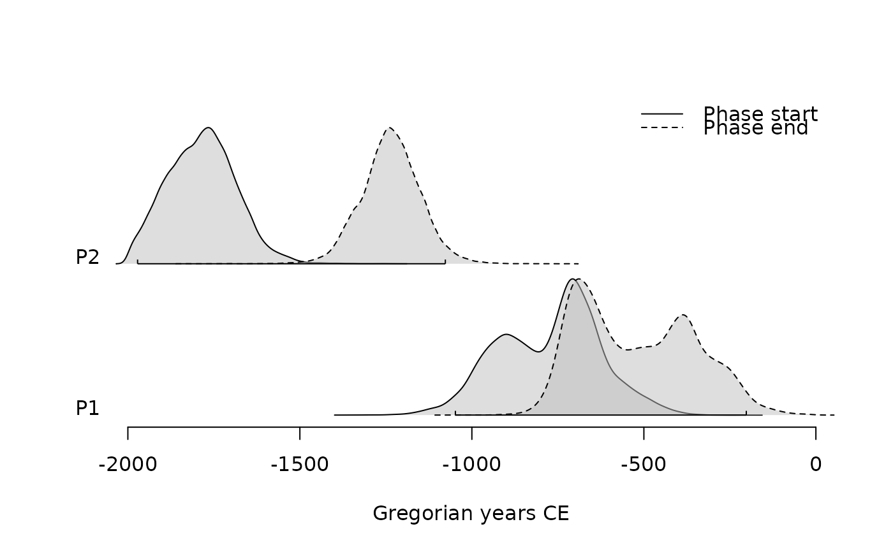
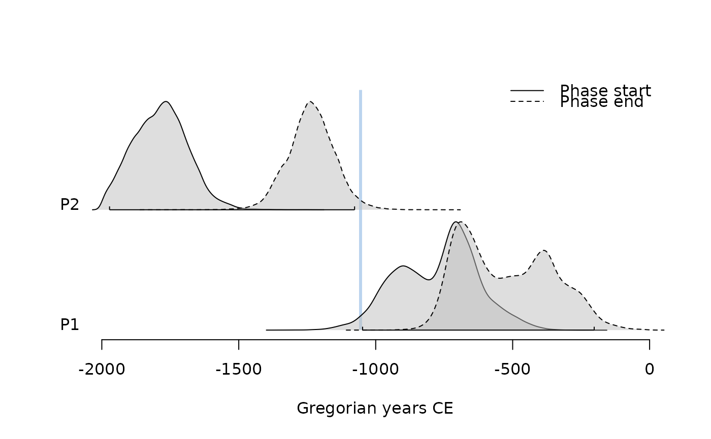
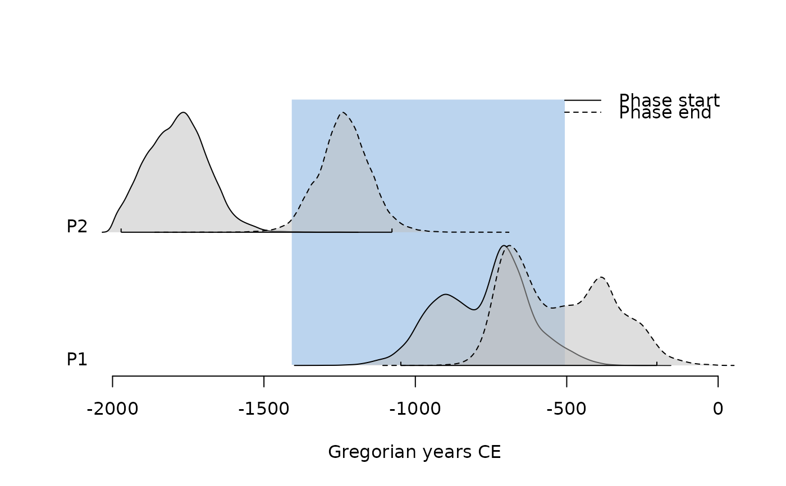

Coerce to Phases
as_phases(from, ...)
# S4 method for matrix
as_phases(
from,
calendar = NULL,
start = seq(from = 1, to = ncol(from), by = 2),
stop = start + 1,
names = NULL,
iteration = NULL
)
# S4 method for data.frame
as_phases(
from,
calendar,
start = seq(from = 1, to = ncol(from), by = 2),
stop = start + 1,
names = NULL,
iteration = NULL
)from An object to be coerced.
Currently not used.
A TimeScale object specifying the source calendar
(see calendar()).
An integer vector specifying the index of the columns
corresponding to the beginning of the phases. If missing, every other column
is used starting from the first column (after deleting the iteration
column, if any).
An integer vector specifying the index of the columns
corresponding to the end of the phases. If missing, every other column
is used starting from the second column (after deleting the iteration
column, if any).
A character vector giving the names of the phases.
A length-one numeric vector specifying the index of the
iteration column.
A PhasesMCMC object.
Other read methods:
as_coda(),
as_events(),
check,
read_bcal(),
read_chronomodel,
read_oxcal()
## Coerce to phases
(pha <- as_phases(mcmc_phases, start = c(1, 3), calendar = CE(), iteration = 1))
#> <PhasesMCMC>
#> - Number of phases: 2
#> - Number of MCMC samples: 30000
summary(pha, calendar = CE())
#> $P1
#> mad mean sd min q1 median q3 max start end
#> start -708 -773 148 -1349 -890 -749 -671 -207 -1059 -501
#> end -690 -521 169 -1050 -670 -537 -384 -5 -776 -214
#> duration 278 253 138 1 151 249 345 880 1 487
#>
#> $P2
#> mad mean sd min q1 median q3 max start end
#> start -1766 -1785 100 -2000 -1857 -1785 -1719 -1223 -1981 -1611
#> end -1240 -1235 87 -1833 -1289 -1235 -1181 -719 -1404 -1067
#> duration 561 551 132 5 464 552 639 1157 297 806
#>
## Plot phases
plot(pha)

plot(pha, succession = "hiatus")

plot(pha, succession = "transition")

## Compute phases from events
(eve <- as_events(mcmc_events, calendar = CE(), iteration = 1))
#> <EventsMCMC>
#> - Number of events: 4
#> - Number of MCMC samples: 30000
## Compute min-max range for all chains
pha1 <- phases(eve)
summary(pha1, calendar = CE())
#> $P1
#> mad mean sd min q1 median q3 max start end
#> start -1766 -1785 100 -2000 -1857 -1785 -1719 -1223 -1981 -1611
#> end -690 -521 169 -1050 -670 -537 -384 -5 -776 -214
#> duration 1167 1265 196 483 1116 1253 1411 1947 915 1637
#>
## Compute min-max range by group
pha2 <- phases(eve, groups = list(phase_1 = c(1, 3), phase_2 = c(2, 4)))
summary(pha2, calendar = CE())
#> $phase_1
#> mad mean sd min q1 median q3 max start end
#> start -708 -773 148 -1349 -890 -749 -671 -207 -1059 -501
#> end -690 -521 169 -1050 -670 -537 -384 -5 -776 -214
#> duration 278 253 138 1 151 249 345 880 1 487
#>
#> $phase_2
#> mad mean sd min q1 median q3 max start end
#> start -1766 -1785 100 -2000 -1857 -1785 -1719 -1223 -1981 -1611
#> end -1240 -1235 87 -1833 -1289 -1235 -1181 -719 -1404 -1067
#> duration 561 551 132 5 464 552 639 1157 297 806
#>
zz <- pha@.Data
head(zz)
#> , , start
#>
#> P1 P2
#> [1,] -319045.0 -625448.0
#> [2,] -273570.0 -629970.0
#> [3,] -335555.9 -604871.0
#> [4,] -319169.8 -609557.0
#> [5,] -323497.0 -706432.8
#> [6,] -355422.6 -677593.3
#>
#> , , end
#>
#> P1 P2
#> [1,] -267769.1 -399848.8
#> [2,] -270327.0 -435810.7
#> [3,] -231655.0 -431449.5
#> [4,] -255757.0 -448294.4
#> [5,] -300265.5 -478087.0
#> [6,] -263102.0 -444912.5
#>
head(zz[, 1, ])
#> start end
#> [1,] -319045.0 -267769.1
#> [2,] -273570.0 -270327.0
#> [3,] -335555.9 -231655.0
#> [4,] -319169.8 -255757.0
#> [5,] -323497.0 -300265.5
#> [6,] -355422.6 -263102.0
head(pha)
#> <PhasesMCMC>
#> - Number of phases: 2
#> - Number of MCMC samples: 6